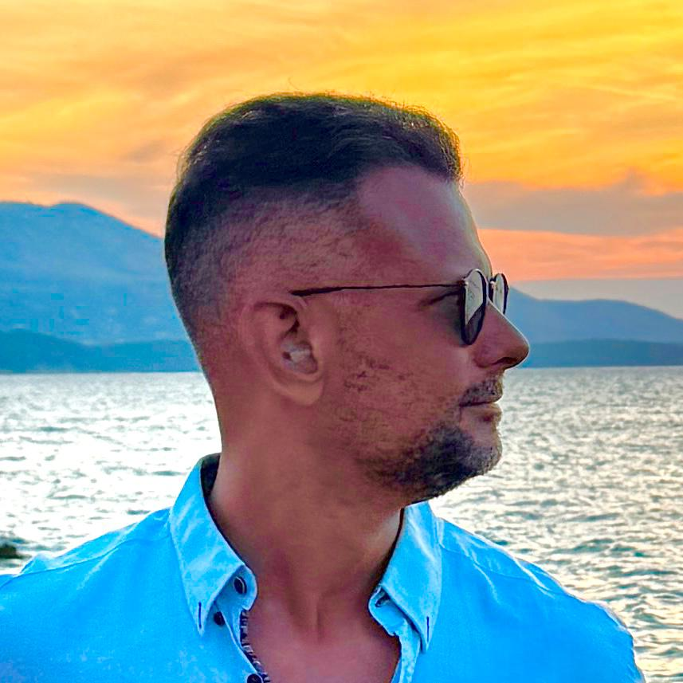

Senior QA Analyst · 20+ Years in Software Quality
📍 Galway, Ireland · 🇧🇷 🇮🇹 🇮🇪
Leading quality assurance efforts across web and mobile applications in a fast-paced Agile/Scrum environment. Responsible for test strategy, planning, execution and reporting, covering functional, regression, performance and UAT testing cycles.
Nearly a decade of QA engineering across enterprise software platforms, covering manual and automated testing, hardware validation, and cross-functional collaboration with global teams.